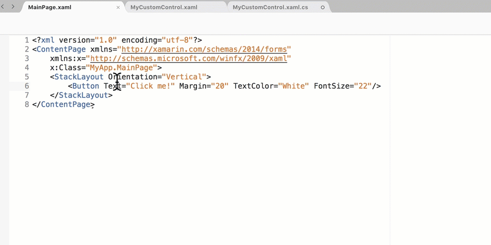

XML Code Actions
Autogenerated by MFractor v3.7.3
Collapse Attributes Onto Same Line
Configuration Id: com.mfractor.code_actions.xml.collapse_attributes_onto_same_line
The Collapse Attributes code action will fold all attributes onto the same line for the XAML node under the cursor.

Collapse Node
Configuration Id: com.mfractor.code_actions.xml.collapse_node_closing_tag
When a Xaml node has a closing tag and no children (eg: <MyNode> </MyNode>), this refactoring allows the developer to remove the closing tag to make the node self-closing. For example, when applied to the node <MyNode> ... </MyNode>, the closing tag </MyNode> is removed and the element becomes self closing like so: <MyNode/>.
Expand Attributes Onto Separate Lines
Configuration Id: com.mfractor.code_actions.xml.expand_attributes_onto_new_lines
The Expand Attributes code action move all attributes onto seperate lines for the XAML node under the cursor.

Expand Node
Configuration Id: com.mfractor.code_actions.xml.expand_node_with_closing_tag
When a Xaml node is self-closing (EG <MyNode/>), this organise refactoring allows a developer to generate a closing tag for the node. For example, the node <MyNode/> would become <MyNode> ... </MyNode> after applying this refactoring.
Format Xaml Document
Configuration Id: com.mfractor.code_actions.xml.format_document
Applies the xml formatting policy to the entire document. It will correctly indent nodes, sort attributes, align attributes under the parent node.
Configurable Properties
| Name | Type | Defaults To | Description |
|---|---|---|---|
| AttributesOnSeparateLines | Boolean | False | Should attributes be placed onto separate lines? |
Uses:
Sort Xaml Attributes
Configuration Id: com.mfractor.code_actions.xml.sort_attributes
This Sort Attribute code actions sorts the attributes for a Xaml node and then recreates the xaml node based on the IDE's xml formatting policy.

MFractor uses the following rules when sorting:
- Attributes that declare an xml namespace are ordered first, sorted alphabetically ascending. For example
xmlns:forms=\"http://xamarin.com/schemas/2014/forms\"will appear beforexmlns:x=\"http://schemas.microsoft.com/winfx/2009/xaml\". - Attributes that belong to the Microsoft Xaml schema
http://schemas.microsoft.com/winfx/2009/xamlare ordered next. For example, thex:Classorx:Namedeclaration. - Attributes belonging to the default namespace are ordered next, sorted alphabetically ascending.
- Attributes belonging to the other namespaces are then ordered next, sorted by namespace ascending and then by attribute name ascending.